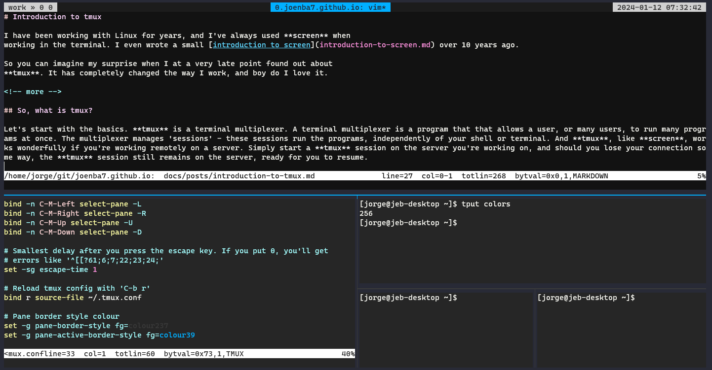

Introduction to tmux
I have been working with Linux for years, and I've always used screen when working in the terminal. I even wrote a small introduction to screen over 10 years ago.
So you can imagine my surprise when I at a very late point found out about tmux. It has completely changed the way I work, and boy do I love it.
So, what is tmux?
Let's start with the basics. tmux is a terminal multiplexer. A terminal multiplexer is a program that that allows a user, or many users, to run many programs at once. The multiplexer manages 'sessions' - these sessions run the programs, independently of your shell or terminal. And tmux, like screen, works wonderfully if you're working remotely on a server. Simply start a tmux session on the server you're working on, and should you lose your connection some way, the tmux session still remains on the server, ready for you to resume.
My current tmux looks something like this:

How does this differ from screen? Well, for starters, tmux makes it easy to have multiple panes up at the same time, while I found it a bit tedious to do the same with screen.
Without going into much further detail, I recommend reading this post on superuser.com, which lists several differences.
So now that you have a bit of information about it, let's get cracking using it.
Using tmux
Using tmux isn't difficult, and it has a lot of other functions than what I mention here, but this is the main way that I use it.
Installation of tmux
The installation of tmux is pretty straight forward:
Debian/Ubuntu
Fedora
Most Linux distributions should have it in their default repo, so it should be pretty straight forward to install it.
Starting a session
To start a tmux session, simply type:
or if you want to give the session a name:
..which gives your session the name 'work'.
Handling sessions
View
To view tmux sessions currently running, type:
..and the output is something like this:
[jorge@jeb-desktop ~]$ tmux ls
work: 1 windows (created Wed Jan 10 18:19:37 2024) [120x29] (attached)
Attach
If you're only running a single session of tmux, attaching/resuming it only requires you to type:
..or if you'd like to specify the session by name, use:
Where 'work' is the name of the session.
Detach
To detach a currently running session, while having tmux up and running, you need to press a combination of keys. In this case it's Ctrl-b d, which means pressing Ctrl-b first, followed up by the letter d. It's often represented in this way:
Splitting panes
The default way of splitting panes is not intuitive, if you ask me. Particularly if you're using an ISO layout on your keyboard. However, the default ways are:
Horizontally
Vertically
My way
Luckily, it's possible to modify your config so that you can use a different key combination. What I'm currently using, and is in my config for tmux (~/.tmux.conf) is:
Then the key combination becomes C-b - for horizontal splitting and C-b | for vertical splitting. Neat huh?
Navigating panes
Navigating through panes isn't exacly easy either by default.
..meaning that to move up, you have to press C-b Arrow Up to move one pane up, then press C-b Arrow Right to go to the pane to the right. If you hold in Ctrl, you can resize the existing pane. This doesn't work at all for me, particularly if I have to move quickly between the panes. So what I've done is I've added the following lines to my config:
bind -n C-M-Left select-pane -L
bind -n C-M-Right select-pane -R
bind -n C-M-Up select-pane -U
bind -n C-M-Down select-pane -D
This allows me to use Ctrl, Alt/Meta and Arrow Up/Down/Right/Left to quickly switch between panes.
Zoom
To maximize/minimize your current pane, so that it fills the entire screen, use:
Closing panes
Closing panes means just killing it. If that's what you want, move your focus to the pane you want to destroy, and enter the following key combination:
Confirm killing the pane with Y and Enter.
Configuration
If you want to create your own configuration, then you should place your config in the file .tmux.conf in your home directory.
My config
That's basically what I need to know to use tmux! If you want to take a look at the configuration I use, see below. Have fun!
## tmux.conf
## Jorge Enrique Barrera <jorge@fbarr.net>
## Settings ##
# 0 is the first number
set -g base-index 0
# Automatically set window title
set-window-option -g automatic-rename on
set-option -g set-titles on
# Set scrollback history to 100000 lines
set -g history-limit 100000
# Synchronize panes with 'C-b c'
bind-key c setw synchronize-panes
# Split vertically/horizontally with 'C-b |' and 'C-b -'
bind | split-window -h -c "#{pane_current_path}"
bind - split-window -v -c "#{pane_current_path}"
# Use Ctrl-Alt-Arrow keys without prefix key to switch panes
bind -n C-M-Left select-pane -L
bind -n C-M-Right select-pane -R
bind -n C-M-Up select-pane -U
bind -n C-M-Down select-pane -D
# Smallest delay after you press the escape key. If you put 0, you'll get
# errors like '^[[?61;6;7;22;23;24;'
set -sg escape-time 1
# Reload tmux config with 'C-b r'
bind r source-file ~/.tmux.conf
# Enables vi mode. Enables searching with / in copy mode.
setw -g mode-keys vi
# Default terminal
set -g default-terminal "xterm-256color"
set -ga terminal-overrides ",*256col*:Tc"
# SSH sock environment variable
setenv -g SSH_AUTH_SOCK $HOME/.ssh/ssh_auth_sock
## Style ##
# Status bar format and colours
set -g window-status-format '#[bg=colour237,fg=#f8f8f2] #I.#(pwd="#{pane_current_path}"; echo ${pwd####*/}): #W#F '
set -g window-status-current-format '#[bg=colour39,fg=black] #I.#(pwd="#{pane_current_path}"; echo ${pwd####*/}): #W#F '
# Pane border style colour
set -g pane-border-style fg=colour237
set -g pane-active-border-style fg=colour39
# Active/Inactive window colour
set -g window-style 'bg=colour235'
set -g window-active-style 'bg=colour233'
# Status bar placement
set -g status-justify centre
set -g status-left-length 40
set -g status-right-length 60
set -g status-position top
# Status bar colours
set -g status-fg white
set -g status-bg "colour234"
set -g status-left '#[fg=colour235,bg=colour252,bold] #S » #I #P '#SessionName
set -g status-right '#[bg=colour252,fg=colour235,bold] %Y-%m-%d %H:%M:%S #[default]'
Possible issues
One of the issues I encountered, when it come to colours, was that I couldn't exactly match the color I had on one server to another. There were multiple colours that was not being shown, and that made the terminal look all wonky. I narrowed it down to that it was the terminal itself that didn't have all the colours I wanted. When I ran the command tput, it showed me only 8 colours:
I need the entire range of 256 colours to make the theme I'm currently using work properly. So I added this to my .bashrc file:
When I then logged completely out of the terminal, and back in, tput showed me 256 colours:
You can also force tmux to use 256 colours, even if the terminal only says 8, by adding a -2 in the command:
To see all the colours available to you, run this oneliner: